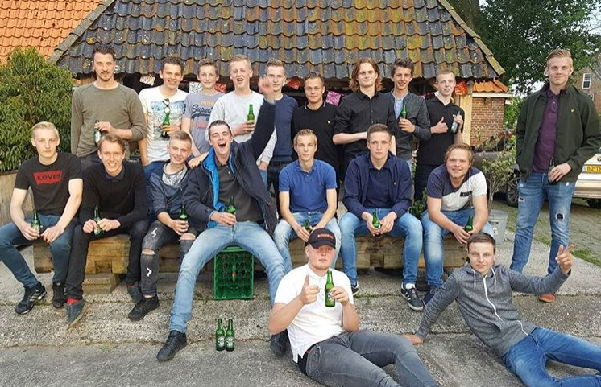
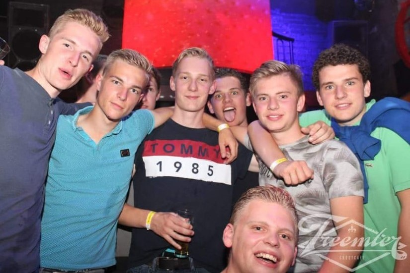

Sinds ik 8 jaar oud ben speel ik al voetbal, dit bij voetbal vereniging Irnsum. Momenteel zit ik in de 2e selectie van de voetbal vereniging. Hieronder een teamfoto, niet in tenue maar bij de afsluiting van ons voetbal seizoen.
Ook mag ik graag even in het weekend met een paar vrienden wat drinken bij iemand thuis. Vaak gaan we dan op zaterdag avond ook nog even met zijn allen op stap. Hieronder heb ik weer even een foto toegevoegd van een avondje stappen.
